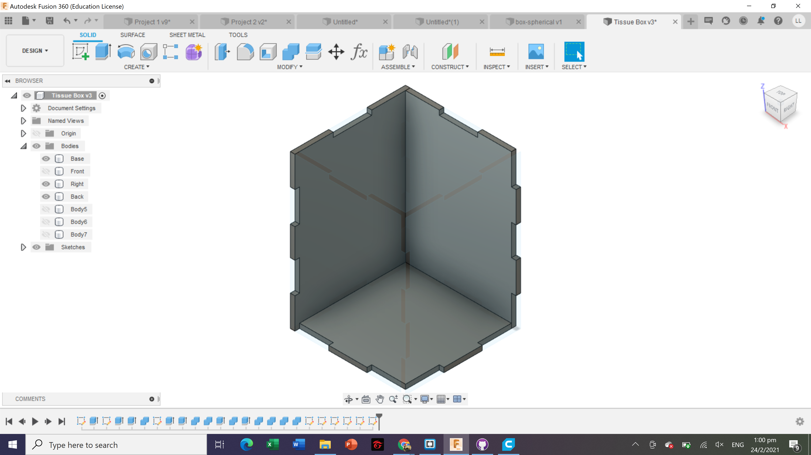
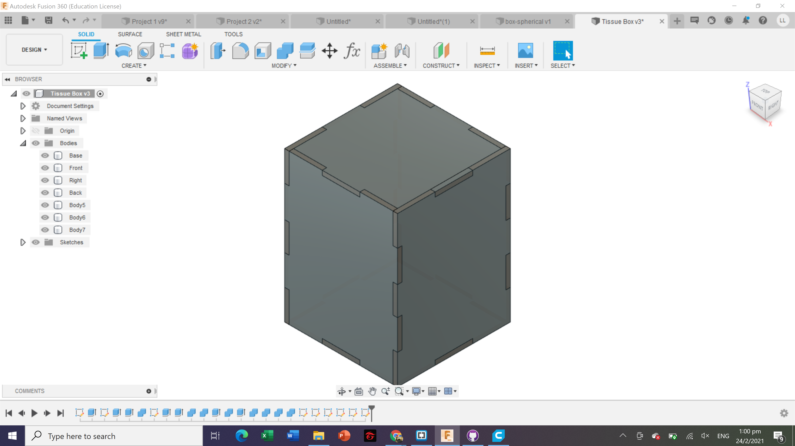
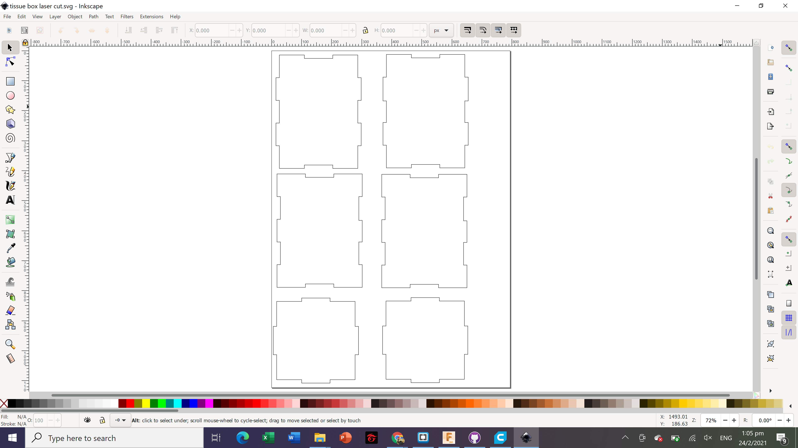
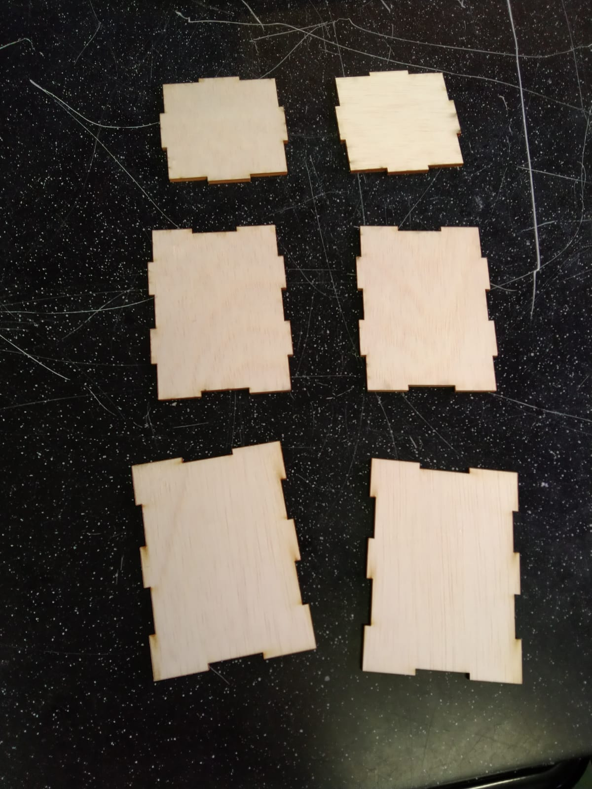
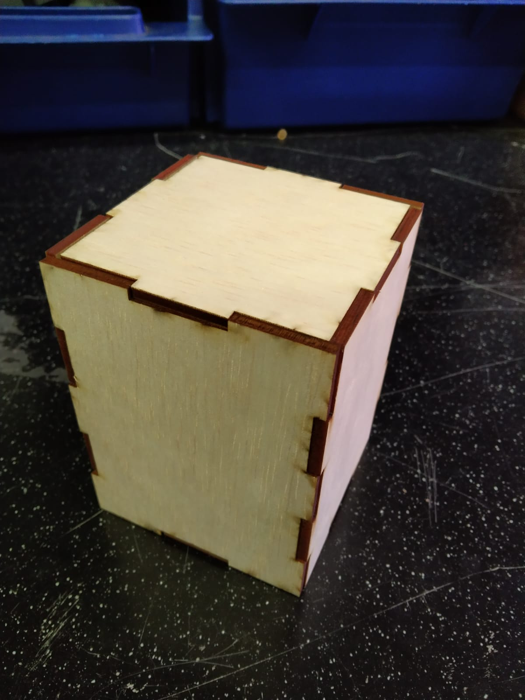

Laser Cutting
Laser-cutting is a non-contact, thermal-based fabrication process is ideal for several materials, including wood, glass, paper, metal, plastic, and gemstone.The word "laser" in laser cutting stands for Light Amplification by Stimulated Emission of Radiation. Laser cutting allows a person to produce detailed and accurate parts. Laser cutting works by directing the output of a high-power laser most commonly through optics. The laser optics and CNC (computer numerical control) are used to direct the material or the laser beam generated. The focused laser beam is directed at the material, which then either melts, burns, vaporizes away, or is blown away by a jet of gas, leaving an edge with a high-quality surface finish.
Laser Cut System
- Computer: Instructions are sent from here to the laser cutter.
- Laser cutters: This machine receives instruction from the PC to cut the designs.L
- Fume Extractor: A safety equipment to prevent accumulation of smoke and gases in the laser cutter. The toxic fumes emitted during laser cutting are sucked out through the Fume extractor.
- Air compressor: A safety equipment that acts as air assist to blow the laser path clear of smoke and debris.
For the laser cutting assignment, I was required to laser cut a tissue box. These are the designs from Fusion 360.
 The next step is to save the dxf files of the 6 seperate sides. I collated all the dxf files onto the inkscape so that I can laser cut it afterwards.
Below are the laser cut pieces of the tissue box and the final product after piecing the tissue box together.
 It was quite hard to piece together the laser cut parts and the tissue box was rather fragile.